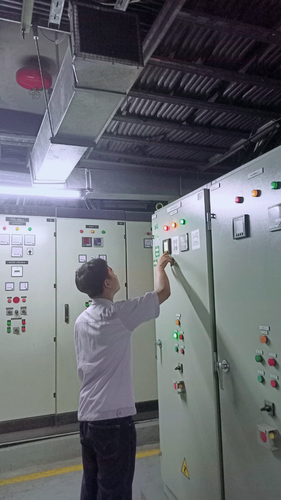
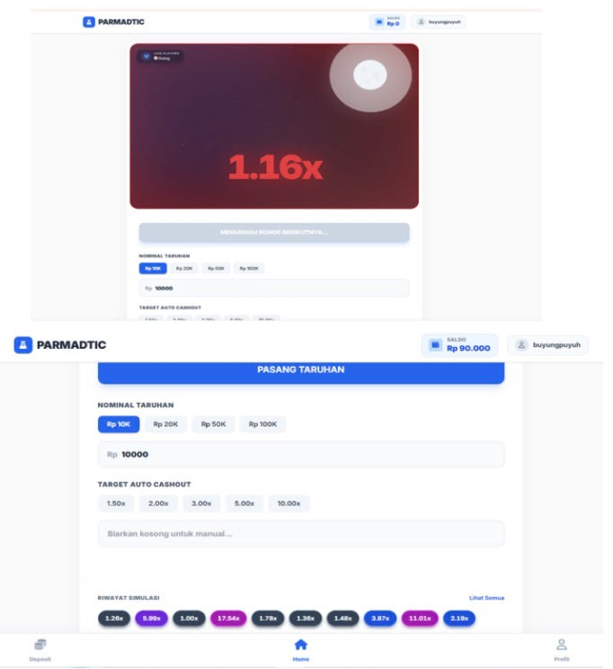
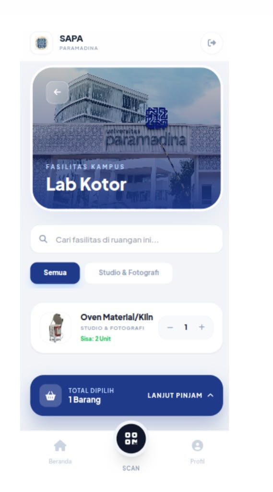

Pengalaman PKL sebagai Teknisi

Saat melaksanakan PKL, saya mendapatkan pengalaman sebagai teknisi. Saya belajar melakukan pengecekan perangkat, membantu pekerjaan teknis, serta mengenal berbagai peralatan yang digunakan dalam pekerjaan.
Pengalaman PKL ini membuat saya mendapatkan pengalaman baru dan lebih memahami pekerjaan di bidang teknis.
Parmadtic

Simulator Edukasi Pencegahan Kecanduan Judi Online
Maraknya kasus kecanduan judi online di Indonesia yang merugikan finansial dan mental masyarakat, yang sering kali dipicu oleh rasa penasaran serta ilusi kemenangan awal dari algoritma permainan. Parmadtic hadir sebagai simulator edukasi untuk memberikan pemahaman akan risiko tersebut.
SAPA Paramadina

SAPA Paramadina adalah aplikasi berbasis mobile dan web yang dirancang untuk mempermudah mahasiswa dan civitas akademika Universitas Paramadina dalam meminjam fasilitas kampus serta peralatan laboratorium seperti peralatan Studio dan Fotografi di Lab Kotor.
Saya juga memiliki media sosial Instagram yang dapat digunakan untuk melihat informasi lainnya tentang saya.
@onlylihh